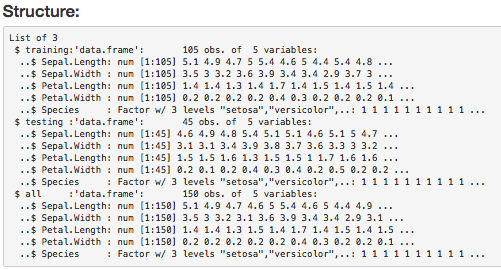
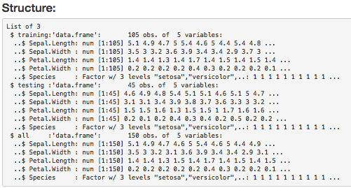
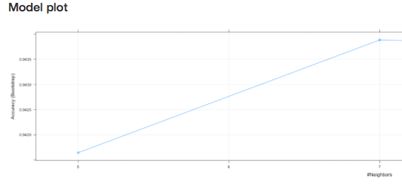
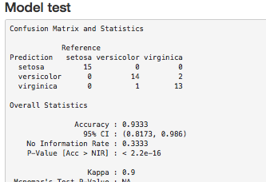
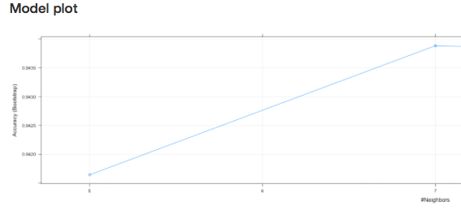
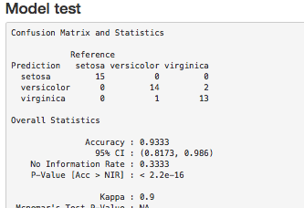

- Goal and features
- Summary feature
- Plots feature
- Model features
Goal and Features
The main goal of this application is to allow students to easily inspect the Iris dataset by providing built-in features such as dataset summary, plots and some machine learning models. That way, a student just starting learining this dataset can quickly take out information of it.
 



 


